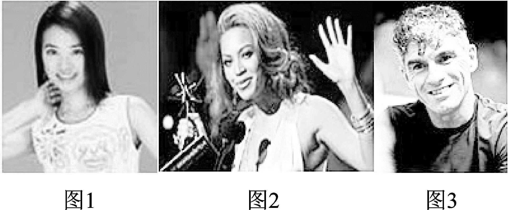
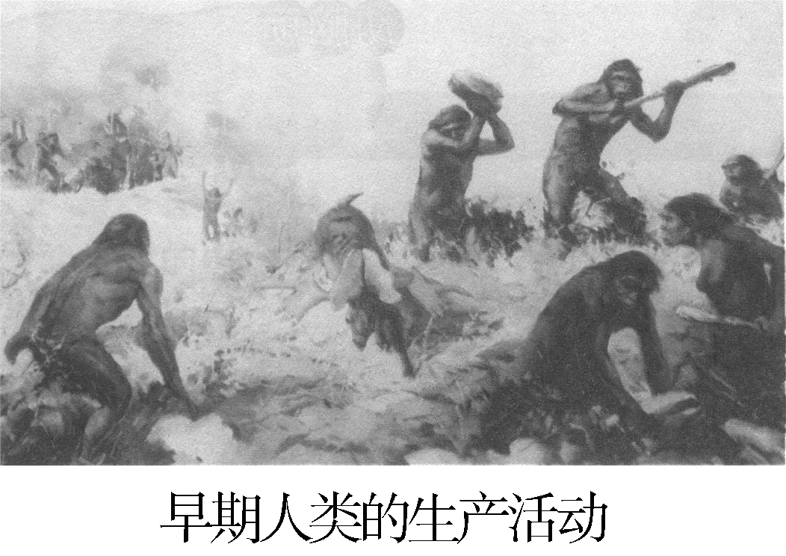

第1课 人类的形成

1.目前，大部分人类学家认为，现代人类可能是从 非洲 ________南方古猿中的一支发展而来的。南方古猿属于 " 正在形成中的人 "________。人类在距今约 三四百万 ________年前形成，人 与 动 物 的 本 质 区 别 是 会 不 会 制 造 工具________。
2.世界上的人类分为三大主要人种，即我们通常所说 的 黄种________ 人、 白种________ 人和 黑种________ 人。人种的 差异是不同 自然地理环境________ 等众多因素长期影响 的结果。
3.人类最初经历的社会是 原 始 社 会 ________。随着 生 产 力________ 的发展和社会的进步，出现了氏族，两个或几个 氏族又组成 部落________ 。
4.在 母 系 ________氏 族 社 会 里，由 于 群 婚 的 缘 故，人 们 " 只知其母，不知其父 "________。 妇 女 在 采 集________和 家务劳动________ 中举足轻重，在社会中占主导地位。
5.在 父系________ 氏族社会里，男子在 经济________ 中占主导地位， 婚姻关系相对 固定________ ，人们开始"既知其母，又知其所以然"。
13.看下图回答问题。
从左到右分别指出图中的人种分类，并说明影响人 种形成的主要因素是什么。
答:图1是黄种人，图2是黑种人，图3是白种人。 主要因素是长期生活在不同的自然地理环境中。
14.诗歌《我骄傲，我是中国人》这样写道 "我骄傲，我是 中国人，我有着宝石般黑色的眼睛;我骄傲，我是中国人，我有着大地般黄色的皮肤……"请回答
(1)"黑色的眼睛……黄色的皮肤"说明中国人是什 么人种?
答:黄种人。
(2)目前世界上有几大主要人种? 人种的差异是在 什么时候形成的? 人种的差异产生的主要原因 是什么?
答:主要有黄种人、白种人和黑种人三大人种;晚期 智人;不同自然地理环境等众多因素长期影响 的结果。
(3)你是否觉得染成像欧洲人那样的金黄色头发是 一道很美的风景? 你认为白种人是天生的优等 种族吗? 为什么?
答:对染友看法并不强求一致，言之有理即可;不认 为，因为人种主要存在外貌特征的差异，各人种 在体质和智力上并无优劣之分。
15.阅读下列材料，回答问题。
材料一 观察下图《早期人类的生产活动》
材料二 为增加劳动人手，生产更多的剩余产品，
人们不再杀死战俘而是把他们变为奴隶。 (1)材料一反映的是人类社会哪一历史时期?
答:原始社会早期。
(2)从材料一到材料二反映了什么问题?
答:反映社会生产力水平提高了。
(3)材料二反映的是人 类 社 会 发 展 的 哪 一 历 史 时 期? 人们为什么不再杀死战俘? 它会有什么积 极作用?
答:父系氏族后期;为了增加劳动人手;保存了劳动 力，有利于社会生产的友展。